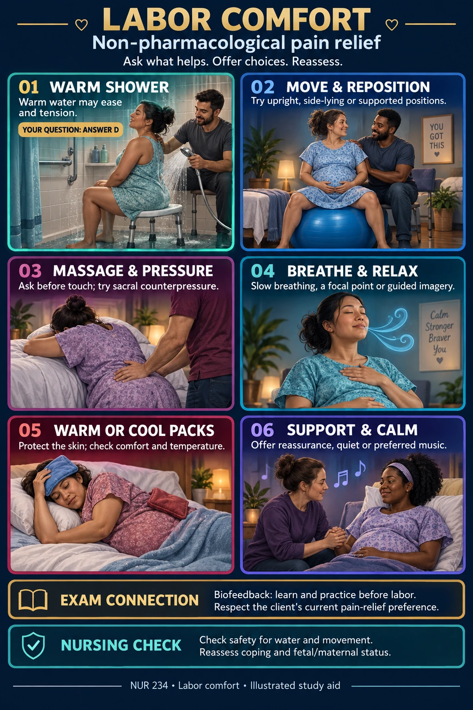

01 Warm shower
Warm water may ease pain and tension.
The highlighted answer in your active-labor question is D: assist the client into a warm shower. Check that water use is appropriate and help with safe entry and exit.
NUR 234 · Labor comfort
Ask what helps. Offer choices. Reassess. Start with the picture, then use the short cards to review.

Active labor + wants non-pharmacological relief → assist into a warm shower (D).
Warm water may ease pain and tension.
The highlighted answer in your active-labor question is D: assist the client into a warm shower. Check that water use is appropriate and help with safe entry and exit.
Try upright, side-lying or supported positions.
Offer a comfortable position change or a supported birth ball when appropriate. Keep necessary monitoring possible.
Ask before touch; try sacral counterpressure.
Offer lower-back massage or firm pressure over the sacrum if wanted. Stop or change the touch when it is uncomfortable.
Slow breathing, a focal point or guided imagery.
Coach a calm breathing rhythm and relaxed shoulders. Imagining a familiar, peaceful place can support coping.
Protect the skin; check comfort and temperature.
Use a protective layer and check the skin. A cool, damp cloth can be soothing when the client feels warm.
Offer reassurance, quiet or preferred music.
Stay present and ask what feels helpful. Music is a preference-based comfort option, not the best answer to the supplied exam item.
These methods can be used alone or alongside medication. A shower for comfort is different from a decision about giving birth in water.
The supplied exam screenshots establish the question's best answer and prenatal biofeedback preparation. The general comfort overview also draws on the sources below. The poster does not claim that music is ineffective throughout active labor.
Prepared October 7, 2026. This supplemental visual does not replace the module's textbook material or change its existing question bank.